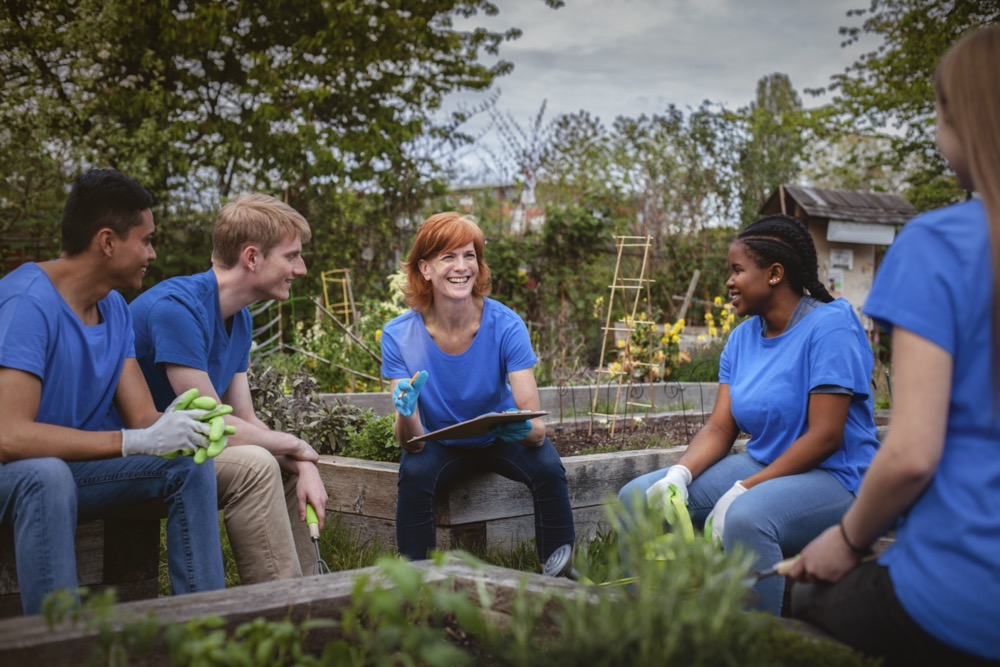
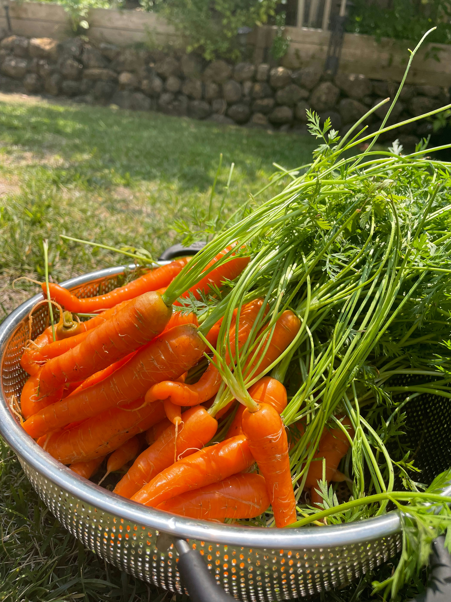

Our Story
Photo by: Alessandro Biascioli
Kumangka Community Garden is a vibrant, sustainable space where local residents come together to cultivate not only fresh produ\ ce but also a strong sense of community. Our garden is rooted in the belief that growing food is about more than just nourishment—it's about fostering conne\ ctions, supporting local ecosystems, and promoting environmental stewardship. Established by a passionate group of neighbors, Kumangka Garden has become a h\ ub for learning, sharing, and collaboration. Whether you're a seasoned gardener or just beginning, our garden welcomes everyone to participate, learn, and e\ njoy the fruits of our collective efforts. Through workshops, volunteer opportunities, and shared gardening experiences, we strive to create a welcoming spa\ ce where diversity thrives, and community bonds grow as strong as the plants we nurture.
Discover our fresh produce >>
Click the thumbnail to view a larger image
